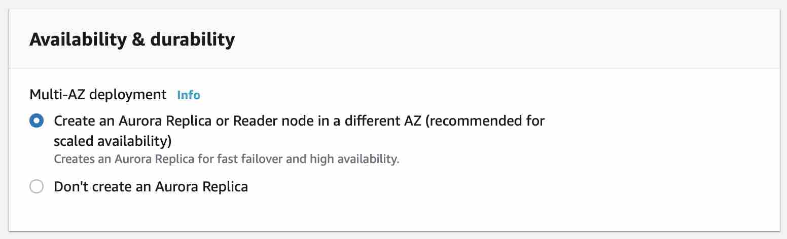
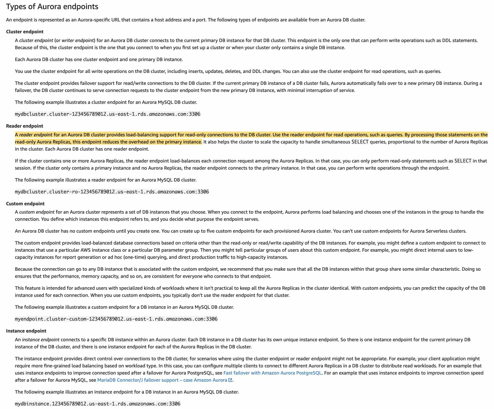

AWS er recommended pattern: SES → SNS topic → Lambda → Kinesis Data Streams (onno account).
- SES event notification SNS topic e push kore; SNS e Lambda subscribe (SNS + Lambda, sec 17).
- Lambda full event SNS theke ney, tarpor onno account er IAM role assume kore Kinesis stream e record put kore (cross-account role).
Note: SES-SNS event notification detail course e nai.
Original explanation (English)
Correct option:
From the SES account, configure SES to push data to an Amazon SNS topic. Subscribe a Lambda function to this SNS topic. Lambda permissions need to be set up for both the accounts (to read from one and write to another). Set up Lambda to send data to Kinesis Data Streams, present in the second AWS account (Here, SES, SNS, and Lambda are present in SES account and Kinesis data streams is present in the second account) -
To set up Amazon SES event notifications to an Amazon Kinesis data stream in another account, do the following:
Start at the SES source. Update your configuration settings in SES to push to an Amazon Simple Notification Service (Amazon SNS) topic. The updated setting configures AWS Lambda to subscribe to the topic as a trigger.
Subscribe to SNS.
Set up cross-account access.
Set up Lambda to send data to Amazon Kinesis Data Streams. Lambda then uses the code to grab the full event from the Amazon SNS topic. Lambda also assumes a role in another account to put the records into the data stream.
Use the Amazon Kinesis Client Library (KCL) to process records in the stream.
Incorrect options:
From the SES account, configure SES to push data to the Lambda function. Lambda permissions need to be set up for both the accounts (to read from one and write to another). Set up Lambda to send data to Kinesis Data Streams, present in the second AWS account (Here, SES, SNS, and Lambda are present in SES account and Kinesis data streams is present in the second account) - When Lambda is directly configured with SES, Amazon SES sends an event record to Lambda every time it receives an incoming message. However, it omits the body of the message. We will need the entire message for the current use case. Hence, this is not the correct option.

via - https://docs.aws.amazon.com/ses/latest/DeveloperGuide/receiving-email-action-lambda-event.html
AWS Lambda cannot write across accounts. So, Amazon SNS has to be set up in both the accounts that need to communicate. SNS topic from account one will write data to SNS topic of the second account. In the second account, use Lambda as a subscriber to SNS. When Lambda fires, it will update Amazon Kinesis data stream with the information payload - AWS Lambda can write across accounts, and SNS topic cannot subscribe to another SNS topic. So this option just acts as a distractor.
Configure SES for multiple AWS accounts. This way, SES can directly write to Amazon Kinesis Data streams in the other account - AWS does not suggest using SES across accounts. However, there are certain conditions under which, it is allowed. Also, SES cannot directly write to Kinesis Data Streams. So, this cannot be the solution for the given use case.
Exceptions where the use of multiple AWS Accounts with SES is allowed:

via - https://aws.amazon.com/blogs/messaging-and-targeting/can-i-use-multiple-aws-accounts-with-ses/
References:
https://aws.amazon.com/premiumsupport/knowledge-center/kinesis-cross-account-ses-notifications/
https://docs.aws.amazon.com/ses/latest/DeveloperGuide/receiving-email-action-lambda-event.html
https://aws.amazon.com/blogs/messaging-and-targeting/can-i-use-multiple-aws-accounts-with-ses/